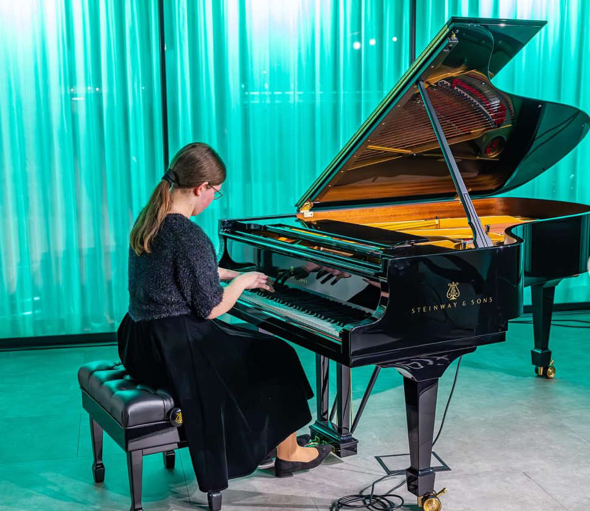
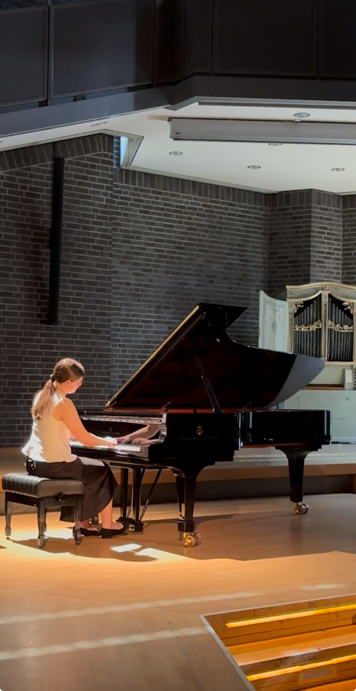
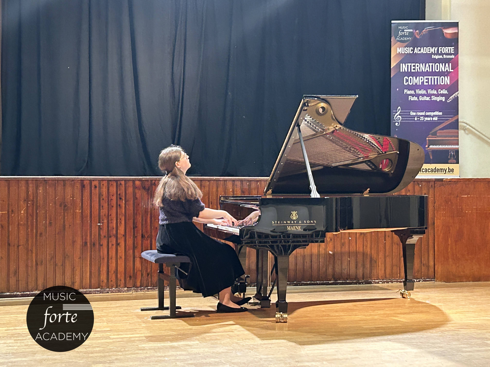
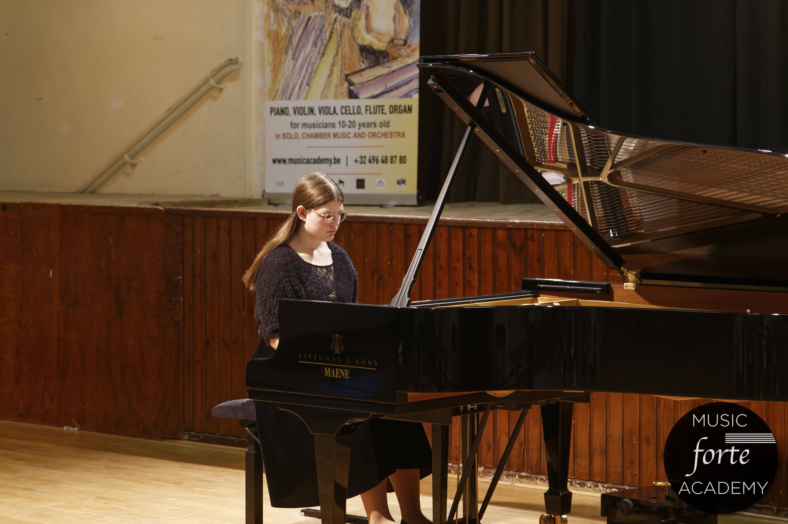

Медіа
Відео
Фотогалерея





Єлизавета Шаповалова — піаністка, яка поєднує технічну майстерність з глибокою емоційною виразністю. Її виконання відзначається тонким розумінням музичної архітектури та здатністю передавати найтонші нюанси композиторського задуму. Кожен концерт стає подорожжю через різноманітність стилів та епох, від бароко до сучасної музики, демонструючи універсальність та професійну зрілість виконавця.
Музичний шлях Єлизавети Шаповалової почався в ранньому дитинстві, коли вона вперше сіла за фортепіано. З перших акордів стало зрозуміло, що музика стане центральною частиною її життя. Початкова освіта заклала міцний фундамент для подальшого професійного розвитку.
Єлизавета отримала фундаментальну музичну освіту в провідних музичних навчальних закладах. Під керівництвом видатних педагогів вона розвивала свою техніку та музичну інтерпретацію, вивчаючи твори різних епох та стилів. Постійне вдосконалення та прагнення до музичної досконалості стали основою її професійного росту.
Активна участь у міжнародних та національних конкурсах дозволила Єлизаветі продемонструвати свій талант на професійному рівні. Кожен конкурс ставав важливим етапом у розвитку, даючи можливість отримати цінний досвід та визнання від музичної спільноти. Результати конкурсів підтверджують високий рівень виконавської майстерності та професійну зрілість.
Репертуар Єлизавети Шаповалової охоплює широкий спектр музичних напрямків — від класичних творів бароко та романтизму до сучасної музики. Особлива увага приділяється інтерпретації творів українських композиторів та популяризації національної музичної спадщини. Її виконання відзначається глибоким розумінням стилю, технічною досконалістю та емоційною виразністю.



Для концертних пропозицій та співпраці звертайтеся за електронною поштою.